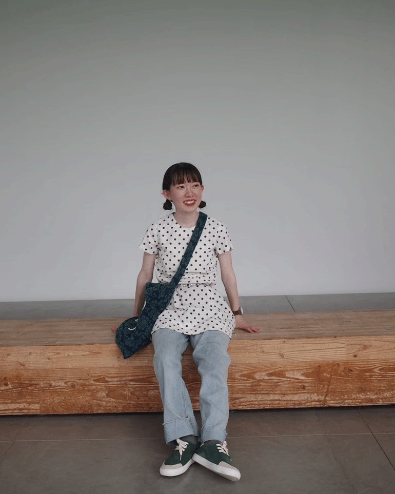
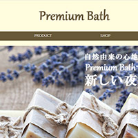

ABOUT

渡辺 杏舞 / AMU WATANABE
自己紹介
2000年2月11日生まれ（25歳）
静岡県駿東郡長泉町出身です。
名前の由来は2000年生まれ(ミレニアム)の「アム」からきているそうです。
略歴
静岡県立大学経営情報学部卒業。ゼミではマーケティングを専攻し、消費者のニーズ分析を学びました。卒業後はITエンジニアとして3年間、上流工程から実装・保守まで一貫して携わりました。
その後、熊本の旅館での仲居業務を通じ、お客様視点で物事を考える洞察力を磨きました。現在は職業訓練にてWebデザインを学びながら、WEBデザイナーとして転職を目指しています。
趣味
旅行に行くこと、ライブに行くこと、料理、編み物などが趣味です。
表紙は広島県の大久野島、左の写真は石川県の金沢21世紀美術館に行った際の写真です。
旅行先のポスターやお店のデザインなどを見るのが好きです。
SKILL
デザインスキル
- Photoshop
- Illustrator
- HTML5
- CSS
★★★☆☆
基本的なツールの操作やレイアウト作成、簡単な写真の加工・補正が可能です。
★★★☆☆
ペンツールを使った図形の描画や、ロゴ・アイコンの作成など、基本的な操作を習得しています。
★★★☆☆
基本的なタグの役割を理解し、指示に沿ったマークアップやサイトの骨組み作成が可能です。
★★★☆☆
文字装飾や色の設定、Flexboxを用いた基本的なレイアウト調整、レスポンシブ対応が可能です。
その他のスキル
- Excel/PowerPoint/Word
- C言語/Java
- SQL
- タイピング
★★★★☆
基本的な文書作成や表計算、スライドの作成など、事務作業全般に使用可能です。
★★★★☆
3年間のエンジニア実務で使用していました。プログラミングの基礎知識があり、コードを読むことに抵抗はありません。
★★★★☆
実務経験2年程度。DB設計、クエリによるデータ抽出・管理を得意としています。
★★★★☆
正確かつスピーディーなコード入力、ドキュメント作成が可能です。
「寿司打」というタイピングゲームにドハマりしています。
WORKS
WEB SITE

製作期間 / 5日
使用ソフト / Photoshop Illustrator VScode
架空のお風呂用品店のHPです。お店のブランディングと告知を目的、ターゲットを20~40代女性としています。自然派商品を取り扱っていることから、サイト全体も自然な色合いにし、大人で落ち着きのある雰囲気を目指しました。
CONTACT
連絡の際は上記アドレスまでご連絡をお願いいたします。